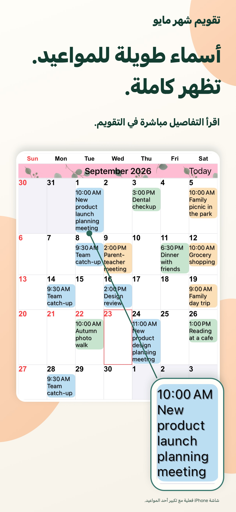
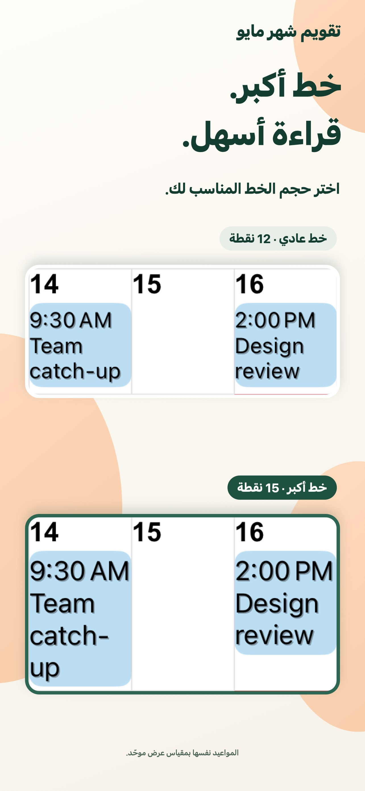
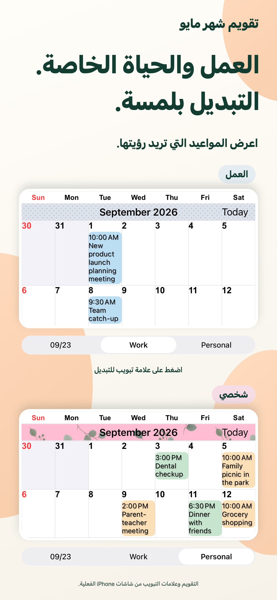
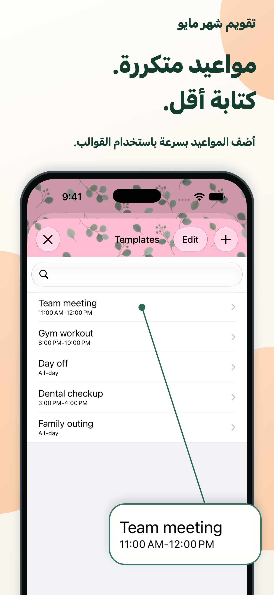

مظهر يعكس ذوقك.
اجمع ألوان السمات وخلفيات الأحداث والنقوش لتصنع تقويمك الخاص.
رؤية أوضح لكل يوم.
أسماء الأحداث الطويلة مباشرة في العرض الشهري. نص وألوان تناسبك، لتتابع خططك اليومية بنظرة واحدة.
لأجهزة iPhone وiPadعرض في App Storeتنزيل مجاني · مشتريات داخل التطبيق

تخطيط يومك أصبح أسهل قليلاً.
العمل والحياة الشخصية في مكان واحد.لحياتك اليومية
اضبط التقويم ليناسب طريقتك في التخطيط.
تظهر الأسماء الطويلة في عدة أسطر. اضبط الخط وحجم النص لقراءة التفاصيل مع إبقاء الشهر كاملاً أمامك.

احفظ مجموعات التقاويم وبدّل بين خطط العمل والخطط الشخصية بلمسة واحدة.

احفظ الاجتماعات والتمارين والمواعيد كقوالب. اضغط مرتين على تاريخ، ثم اختر قالباً لإضافة حدث.

تفاصيل صغيرة، فرق كبير.
اجمع ألوان السمات وخلفيات الأحداث والنقوش لتصنع تقويمك الخاص.
اختر من بين 20 نوعاً من الأدوات، بما فيها أدوات حصرية لأجهزة iPad.
اعرض فقط الأحداث المطابقة للنص الذي تدخله.
أسئلة وأجوبة
التنزيل مجاني، مع مشتريات داخل التطبيق. راجع App Store للأسعار والخيارات الحالية. عرض في App Store
نعم، يدعم iPhone وiPad. بعض الأدوات حصرية لأجهزة iPad. راجع App Store لمعرفة متطلبات النظام الحالية.
يدعم التذكيرات والعطلات وأرقام الأسابيع ومعلومات التقويم القمري. يمكنك أيضاً ضبط بداية الأسبوع والمنطقة الزمنية.
تصل الإشعارات من تطبيق التقويم من Apple. يمكنك ضبط تنبيهات قبل بداية الحدث أو قبل نهايته.
أيام أكثر وضوحاً.
ابدأ بتقويم يناسبك.